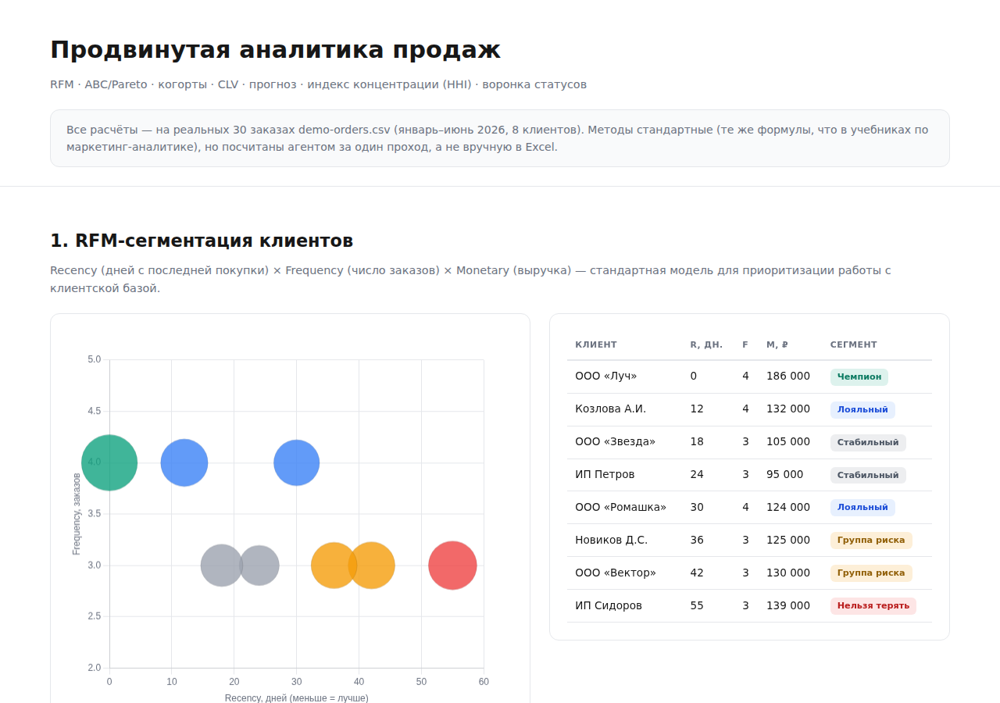
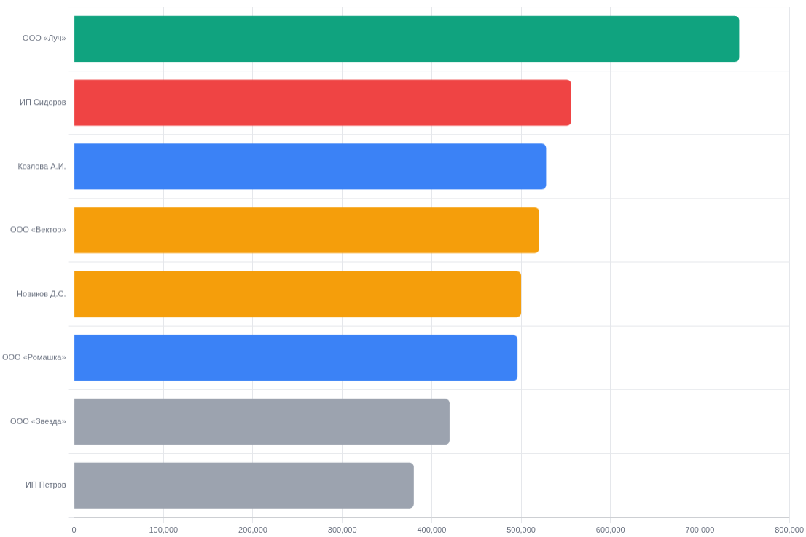
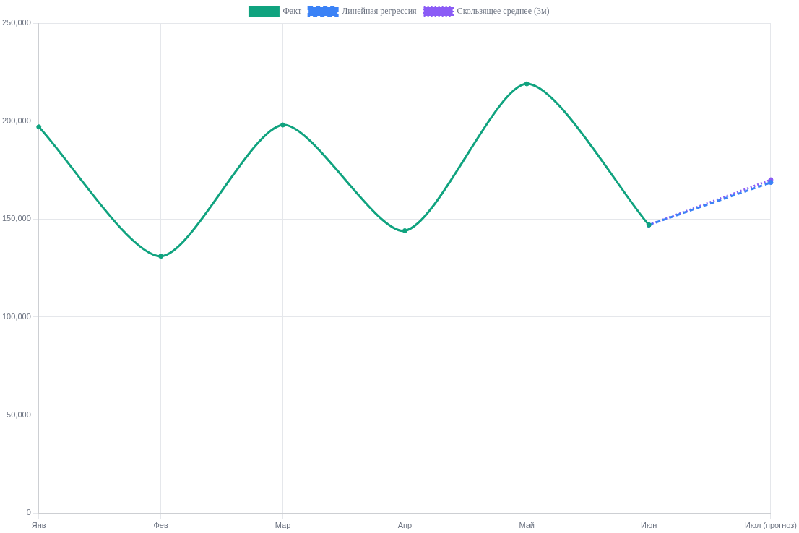

RFM-сегментация клиентов, ABC/Pareto-анализ, индекс концентрации HHI, когортный анализ удержания, CLV (пожизненная ценность клиента) и прогноз выручки двумя методами. Всё посчитано агентом за один проход по тем же 30 строкам, что и в уроке 1.
Базовый дашборд из урока 1 (заказы, выручка, средний чек) — то, что любой предприниматель уже видел в Excel. Модели из этого урока — стандартный инструментарий маркетинг- и финансовой аналитики, который на практике редко доходит до малого бизнеса, потому что руками их считать долго. Агент убирает это ограничение: время расчёта перестаёт зависеть от сложности модели.
Та же выгрузка, что в уроке 1 (своя или демо-данные).
Посчитай по каждому клиенту RFM: Recency (дней с последней покупки), Frequency (число заказов), Monetary (сумма). На основе трёх метрик раздели клиентов на сегменты: чемпионы, лояльные, стабильные, группа риска, нельзя терять. Объясни логику каждого сегмента.

Пузырёк — клиент, размер = выручка. Главная находка: ИП Сидоров не покупал дольше всех (55 дней) — и он же один из самых ценных по деньгам. Сегмент «нельзя терять» существует именно для такого случая.
Учебный момент. RFM — это не про то, кто «в среднем» хороший клиент, а про то, где сходятся сразу два сигнала: большая ценность И тревожный сигнал (долгое молчание). По отдельности Recency и Monetary ничего не говорят о приоритете звонка; вместе — говорят всё.
Сделай ABC-анализ клиентов по выручке (классы A/B/C по накопительному вкладу до 80/95/100%) и посчитай индекс концентрации Херфиндаля-Хиршмана (HHI) по долям выручки клиентов.
Оба метода отвечают на разные версии одного вопроса «насколько мы зависим от небольшого числа клиентов» — ABC делит клиентов на группы приоритета, HHI даёт одно число для сравнения периодов.
Построй когортную таблицу: для каждого клиента отметь, в какие месяцы он покупал, начиная с первого месяца. Отдельно посчитай CLV каждого клиента: средний чек × частота покупок в месяц × 24 месяца (горизонт отношений).

ИП Сидоров (красный — «нельзя терять» из RFM) — второй по CLV, почти 560 000 ₽ ожидаемой ценности за два года. Приоритет для звонка виден с первого взгляда — цвет сегмента и высота столбца указывают в одну точку.
Учебный момент. Один и тот же цвет сегмента, использованный в RFM-диаграмме и в CLV-графике, — это не украшение, а связка между моделями. Разрозненные цифры в отдельных таблицах не складываются в решение; повторяющаяся цветовая кодировка — складывает.
Спрогнозируй выручку на следующий месяц двумя способами: линейной регрессией и скользящим средним за 3 месяца. Покажи R² линейной модели и явно скажи, стоит ли ей доверять.

R² линейной модели ≈ 0 — тренда почти нет, только колебания («качели», как в отчёте из М1). Оба метода прогноза сошлись в одну точку не потому, что оба точны, а потому, что при отсутствии тренда линейная модель вырождается в то же среднее.
Построй воронку: сколько заказов было оформлено всего, сколько из них не отменено, сколько дошло до оплаты. Проценты должны считаться от общего числа, а не от предыдущей строки.
30 → 27 → 20: честная последовательная воронка, где каждая полоса — реальная доля от общего числа. Первая версия этого блока была нарисована неверно (см. заметки из практики).
Попроси агента свести все шесть моделей в один HTML-документ с понятными подписями — результат, который можно показать партнёру или инвестору не стыдясь.
| Симптом | Причина | Решение |
|---|---|---|
| Воронка визуально «сужается» неправильно (частый статус показан как редкий) | Ширина полос задана вручную, не от реальных чисел | Всегда считай ширину/высоту как функцию от данных, проверяй на глаз после расчёта |
| Прогноз выглядит уверенно, хотя данных мало | Не попросили показать метрику качества модели (R², доверительный интервал) | Явно проси: «покажи, насколько можно доверять этому прогнозу» |
| ABC-классы на маленькой базе выглядят «неправильно ровными» | Так и должно быть — не путать с ошибкой | Поясняй пользователю: чёткость классов растёт вместе с размером базы |
| Модели посчитаны, но никак не связаны друг с другом | Каждый блок как отдельная задача агенту | Проси сквозную цветовую кодировку сегментов через весь отчёт |
Прогони все шесть моделей на своей реальной выгрузке. Найди своего «ИП Сидорова» — клиента, где высокая ценность встречается с растущим риском ухода, — и сделай ему звонок на этой неделе.
Воронка статусов в первой версии была нарисована с ширинами «на глаз», подобранными для красивого сужения сверху вниз — и в итоге показывала самый частый статус («Оплачен», 20 из 30) как самую узкую полосу, будто это редкий случай. Перепроверка (реальные проценты от общего числа) показала: воронка должна идти 30→27→20, а не «Новый→Доставка→Оплачен» как параллельные категории. Тот же принцип, что и во всём курсе: красивая картинка — не доказательство правильности расчёта.